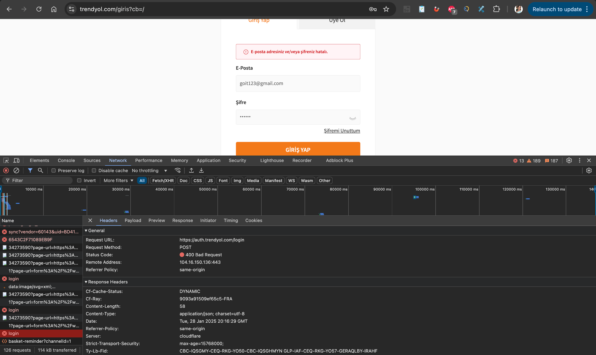

Task 02
Login Attempt Request
Login POST request to auth service and its error response were analyzed.
Request Summary
Analysis Note
Authentication-flow related request/response headers were reviewed.
Visual Evidence

Task 02
Login POST request to auth service and its error response were analyzed.
Authentication-flow related request/response headers were reviewed.
